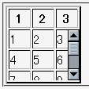
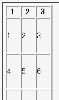

thead, tfoot, tbodyの各要素にheightプロパティを指定すると、内部のth, tdの各要素にその値が継承する。
<table border="2" style="width:6em;"> <thead> <tr><th>1</th><th>2</th><th>3</th></tr> </thead> <tbody style="height:4em; overflow:auto;"> <tr><td>1</td><td>2</td><td>3</td></tr> <tr><td>4</td><td>5</td><td>6</td></tr> <tr><td>7</td><td>8</td><td>9</td></tr> <tr><td>1</td><td>2</td><td>3</td></tr> <tr><td>4</td><td>5</td><td>6</td></tr> <tr><td>7</td><td>8</td><td>9</td></tr> </tbody> </table>
| 1 | 2 | 3 |
|---|---|---|
| 1 | 2 | 3 |
| 4 | 5 | 6 |
| 7 | 8 | 9 |
| 1 | 2 | 3 |
| 4 | 5 | 6 |
| 7 | 8 | 9 |
tbody要素の高さを4emに設定しています。なお、heightプロパティは継承しないと定められています。
N7.02での表示（標準モード）
WinIE6.0での表示（標準モード）
WinIE5.5、WinIE6.0標準モード、WinIE6.0互換モードで不具合の発生が確認されました。